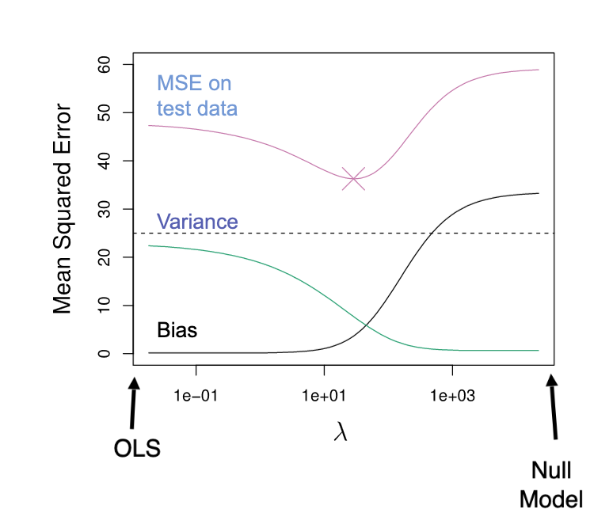

Recall that before we do cross-validation, we need to have split off a test set from our overall data. To do cross-validation, we take our training data and split it into \(k\) equally-sized groups. For each set, we train the model on the other \(k - 1\) sets and validate the model using the selected set. We then average the validation error across all \(k\) sets to get our cross-validation error.
The following objects are masked from 'package:stats':
filter, lag
The following objects are masked from 'package:base':
intersect, setdiff, setequal, union
Code
library(reticulate)use_condaenv("msa")ames <-make_ordinal_ames()ames <- ames %>%mutate(id =row_number())set.seed(4321)# Split 70% for training, 30% for testingtraining <- ames %>%sample_frac(0.7)testing <-anti_join(ames, training, by ="id")# Select a subset of data based on previous data explorationtraining <- training %>%select(Sale_Price, Bedroom_AbvGr, Year_Built, Mo_Sold, Lot_Area, Street, Central_Air, First_Flr_SF, Second_Flr_SF, Full_Bath, Half_Bath, Fireplaces, Garage_Area, Gr_Liv_Area, TotRms_AbvGrd)
Code
import pandas as pdtraining = r.trainingtesting = r.testing
2 Model Selection
Linear models contain many different models. We should always start by narrowing a list of reasonable predictor variables through exploratory analysis. For explanation and inference, we can use forward, backward, and stepwise selection.
Instead of evaluating on the training set, we evaluate on the validation set for each step.
Figure 1: Stepwise Selection through Cross-Validation
In Figure 1, each numbered row represents training the model at that stage on each of the \(k\) folds. The validation error is then averaged across all \(k\) folds. The model with the lowest validation error is selected. Since our focus is on prediction, we don’t care as much about the typical assumptions of variables. We want to focus on the relationship between the response and the explanatory variable.
At step 0, for each variable we train 10 models and average their errors. We then have to take the next variable then train another 10 models and average their errors. After evaluating every univariate model, we select the variable with the lowest average error.
set.seed(9876)# nvmax controls what the max number of variables we want to consider in our modelsstep_model <-train(Sale_Price ~ ., data = training, method ="leapBackward", tuneGrid =data.frame(nvmax =1:14), trControl =trainControl(method ="cv", number =10))step_model$bestTune
nvmax
6 6
If we were to see step_model$results then each row shows the average metric for each metric calculated for the best model selected. For example, if we were to use RMSE, then each row would show the average RMSE across all 10 folds.
To see the actual final model with the best tuned parameters:
Use validation to evaluate which model is “best” at each step of the procedure
Final model contains variables remaining at end of procedure
Combine training and validation and update parameter estimates on the chosen variables
“Modern” View
Use validation to evaluate which model is “best” at each step of the procedure
Final model contains same number of variables as model at end of procedure
Combine training and validation but do not restrict yourself to any variable, just the number of variables
In the classical view, we can take those final variables and retrain the model on the entire training set. In the modern view, we drop cross-validation and see what optimal model for the selected nvmax is on the entire training set. The modern view assumes that there is no globally optimal variable even as data changes, but there is an optimal number of variables to use–the best variables can change as data changes.
When it comes to retraining the model with new data, the modern view does not need to retune the best number of parameters unless the data fundamentally changes. Changes can include new variables or how we view our data to begin with.
Call:
glm(formula = Sale_Price ~ First_Flr_SF + Second_Flr_SF + Year_Built +
Garage_Area + Bedroom_AbvGr + Fireplaces, data = training)
Coefficients:
Estimate Std. Error t value Pr(>|t|)
(Intercept) -1.407e+06 6.439e+04 -21.852 < 2e-16 ***
First_Flr_SF 1.128e+02 3.236e+00 34.871 < 2e-16 ***
Second_Flr_SF 8.252e+01 2.812e+00 29.342 < 2e-16 ***
Year_Built 7.256e+02 3.306e+01 21.945 < 2e-16 ***
Garage_Area 6.012e+01 5.366e+00 11.203 < 2e-16 ***
Bedroom_AbvGr -1.265e+04 1.317e+03 -9.607 < 2e-16 ***
Fireplaces 1.113e+04 1.555e+03 7.157 1.14e-12 ***
---
Signif. codes: 0 '***' 0.001 '**' 0.01 '*' 0.05 '.' 0.1 ' ' 1
(Dispersion parameter for gaussian family taken to be 1561167099)
Null deviance: 1.275e+13 on 2050 degrees of freedom
Residual deviance: 3.191e+12 on 2044 degrees of freedom
AIC: 49246
Number of Fisher Scoring iterations: 2
Modern view:
Code
empty_model <-glm(Sale_Price ~1, data = training)full_model <-glm(Sale_Price ~ ., data = training)final_model2 <-step(empty_model, scope =list(lower =formula(empty_model), upper =formula(full_model)), direction ="both", steps =6, trace =0)summary(final_model2)
Call:
glm(formula = Sale_Price ~ Gr_Liv_Area + Year_Built + First_Flr_SF +
Garage_Area + Bedroom_AbvGr + Fireplaces, data = training)
Coefficients:
Estimate Std. Error t value Pr(>|t|)
(Intercept) -1.441e+06 6.451e+04 -22.343 < 2e-16 ***
Gr_Liv_Area 8.116e+01 2.790e+00 29.086 < 2e-16 ***
Year_Built 7.433e+02 3.313e+01 22.438 < 2e-16 ***
First_Flr_SF 3.053e+01 2.944e+00 10.370 < 2e-16 ***
Garage_Area 6.110e+01 5.373e+00 11.372 < 2e-16 ***
Bedroom_AbvGr -1.258e+04 1.322e+03 -9.518 < 2e-16 ***
Fireplaces 1.138e+04 1.558e+03 7.305 3.95e-13 ***
---
Signif. codes: 0 '***' 0.001 '**' 0.01 '*' 0.05 '.' 0.1 ' ' 1
(Dispersion parameter for gaussian family taken to be 1569252272)
Null deviance: 1.2750e+13 on 2050 degrees of freedom
Residual deviance: 3.2076e+12 on 2044 degrees of freedom
AIC: 49257
Number of Fisher Scoring iterations: 2
We have a different set of 6 variables under the modern view.
4 Regularization
Regularization is a tool toc ontrol the complexity/flexibility of a model. We are adding a penalty term to penalize model complexity. Model is biased, but potentially improves variance.

Figure 2: Bias-Variance Tradeoff
Regularized regression puts constraints on the estimates coefficients in our model and shrink these estimates to 0. We have three common methods:
LASSO
Ridge
ElasticNet
4.1 Penalties in Models
We introduce a penalty term into our loss function to penalize coefficients.
If \(\lambda = 0\), then OLS. As \(\lambda \longrightarrow \infty\), coefficients shrink to 0 and can become 0.
4.4 ElasticNet
ElasticNet combines both Ridge and LASSO based on a new \(\alpha\) parameter. Any calue of \(\alpha\) between 0 and 1 gives a combination of both penalties. We can use cross-validation to tune the \(\alpha\) parameter.